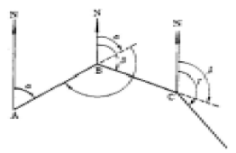
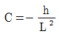
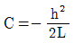
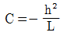
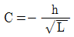
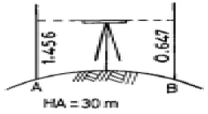
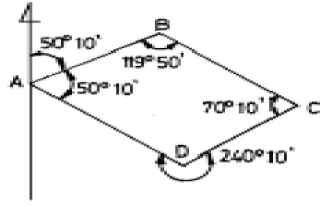
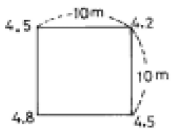
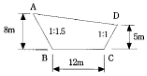

측량기능사 (2005-01-30 기출문제)
1과목: 임의 구분
1. 폐합트래버스에서 편각을 측정하였을 때의 측각오차는? (단, n은 변수이고 [복원중α]는 편각의 합) (문제 오류로 현재 복원중입니다. 보기 내용을 아시는 분들께서는 오류 신고를 통하여 보기 작성 부탁 드립니다. 정답은 3번입니다.)
- 복원중α= [복원중α] - 180°(n-2)
- 복원중α= [복원중α] - 180°(n+2)
- 복원중α= [복원중α] - 360°
- 복원중α= [복원중α] + 180°(n+2)
(정답률: 69%)

2. 두 점 사이에 강·호수 또는 계곡 등이 있어서 그 두 점중간에 기계를 세울 수 없어, 기슭에서 양쪽에 세운 표척을 동시에 읽어 두 점의 표고차를 2회 산술 평균하는 측량방법을 무엇이라 하는가?
- 종단 수준 측량
- 횡단 수준 측량
- 삼각 수준 측량
- 교호 수준 측량
(정답률: 74%)
3. 3차원 위치를 결정할 수 있는 위성 항측 시스템으로 두점 간의 시통이 되지 않는 지형에서도 관 가능한 거리측량기는 무엇인가?
- 초장기선 간섭계
- 전파거리 측정기
- GPS 측량기
- 광파거리 측량기
(정답률: 81%)
4. 방위각 240°의 역방위는 얼마인가?
- N 60°E
- S 60°E
- S 60°W
- N 60°W
(정답률: 42%)
5. 평판 측량의 장점이 아닌 것은?
- 측량의 과실을 발견하기 쉽다.
- 측량방법이 간단하다.
- 높은 정확도를 기대할 수 있다.
- 내업이 적다.
(정답률: 76%)
6. 삼각 측량중 가장 정밀도가 좋은 것은?
- 단열 삼각망
- 사변형 삼각망
- 유심다각 삼각망
- 삼각형복열 삼각망
(정답률: 82%)
7. 표준척보다 5cm 늘어난 50m 의 강권척으로 232m를 측정하였을 때 보정치는?
- - 4.64m
- + 4.64m
- - 0.232m
- + 0.232m
(정답률: 35%)
8. 표준자보다 1cm 짧은 20m 줄자로 사각형의 거리를 재어 면적을 계산하니 100m2 이었다. 이 면적을 표준자로 측정하여 계산하면 얼마인가?
- 100.0m2
- 100.1m2
- 99.9m2
- 99.8m2
(정답률: 42%)
9. 폐합 트래버스 측량 결과에서 위거의 오차가 -0.025m, 경거의 오차가 0.072m 일 때 폐합 오차는?
- 0.028m
- 0.013m
- 0.076m
- 0.132m
(정답률: 51%)
10. 수평각 관측에서 진북을 기준으로 어느 측선까지의 각을 시계 방향으로 각 관측하는 방법은?

- 교각법
- 편각법
- 방위각법
- 방향각법
(정답률: 62%)
11. 3대회의 방향관측법으로 수평각을 관측할 때 트랜싯분도원의 위치는 어떻게 되어야 하는가?
- 0°, 90°, 180°
- 0°, 60°, 120°
- 0°, 30°, 60°
- 0°, 60°, 90°
(정답률: 43%)
12. 축척 1:1,000인 평판측량에서 도상점과 지상측점과의 편심거리가 10cm일 때 도상에서 제도의 허용오차는?
- 0.1mm
- 0.2mm
- 0.3mm
- 0.4mm
(정답률: 30%)
13. 측점이 15개인 폐합트래버스의 내각의 합은?
- 2760°
- 2520°
- 2160°
- 2340°
(정답률: 45%)
14. 지형 공간 정보 체계의 하드웨어 구성을 3개 그룹으로 구분할 때 가장 거리가 먼 것은?
- 자료의 입력
- 자료의 관리와 분석
- 자료의 출력
- 자료의 저장
(정답률: 38%)
15. 방위 S 50°45′20″W를 방위각으로 나타내면 얼마인가?
- 320°45′20″
- 230°45′20″
- 140°45′20″
- 50°45′20″
(정답률: 65%)
16. 트랜싯 측량에서 목표물과 십자선의 초점이 정확히 일치하지 않기 때문에 생기는 오차는?
- 시준 오차(시차)
- 우연 오차
- 착오
- 수평축 오차
(정답률: 59%)
17. 높이를 비교하는 면으로 면의 모든 점의 높이가 0 (zero)인 것으로 다음중 가장 옳은 것은?
- 수평면
- 수직면
- 수준면
- 기준면
(정답률: 35%)
18. 수준면과 지구의 중심을 포함한 평면이 교차하는 선을 무엇이라 하는가?
- 수평면
- 기준면
- 연직선
- 수준선
(정답률: 27%)
19. 수준측량시 한 측점에서 동시에 전시와 후시를 모두 취하는 점을 무엇이라 하는가?
- 전시점
- 후시점
- 중간점
- 이기점
(정답률: 61%)
20. 일정한 경사지에서 A, B 2점간의 경사거리를 측정하여 150m를 얻었다. AB 간의 고저차가 20m였다면 수평거리는?
- 148.7m
- 147.3m
- 146.6m
- 144.8m
(정답률: 44%)
2과목: 임의 구분
21. 축척 1:5,000인 도면에서 도상의 길이가 2.5cm 인 다리의 실제 길이는?
- 25m
- 50m
- 100m
- 125m
(정답률: 45%)
22. 조정각이 23°44′36″일 때 표차는? (단, 대수 7자리까지로 함)
- 38.61
- 40.27
- 47.87
- 57.91
(정답률: 48%)
23. 수평축과 연직축이 직각되지 않기 때문에 생기는 오차는?
- 수평축 오차
- 연직축 오차
- 시준선의 편심 오차
- 회전축의 편심 오차
(정답률: 18%)
24. 수평거리를 직접 측정하지 못하고 경사거리와 고저차를 측정하였을 때 경사에 대한 보정치(C)를 구하는 식은? (단, h : 기선 양단의 고저차, L : 경사거리)




(정답률: 64%)
25. 각의 종류에서 임의의 기준선으로부터 어느 측선까지 시계방향으로 잰 각은?
- 방위각
- 방향각
- 고저각
- 천정각
(정답률: 79%)
26. 삼각측량의 주목적은 무엇을 하기 위한 것인가?
- 삼각점의 위치를 결정하기 위한 것
- 변의 길이를 산출하기 위한 것
- 삼각형의 면적을 산출하기 위한 것
- 기타 측량의 기준점을 확보하기 위한 것
(정답률: 51%)
27. 세부도근점을 결정하기 위한 방법으로 많은 점의 시준이 불가능하고 길고 좁은 지역의 측량에 이용되는 평판 측량 방법은?(오류 신고가 접수된 문제입니다. 반드시 정답과 해설을 확인하시기 바랍니다.)
- 교회법
- 방사법
- 후방교회법
- 전진법
(정답률: 41%)
28. 평판 세우기 방법에서 평판을 지상에 설치하기 위한 조건이 아닌 것은 어느 것인가?
- 수평맞추기
- 중심맞추기
- 세로맞추기
- 방향맞추기
(정답률: 72%)
29. 다음 수준측량의 측량도를 보고 B 점의 지반고를 계산한 값은? (단,A점 지반고 30m, A점 함척눈금 1.456m, B점 함척높이 0.647m 이다.)

- 30.809m
- 29.191m
- 28.143m
- 26.147m
(정답률: 45%)
30. 삼각망을 선점할 때 일반적으로 한 내각의 크기는 어느 정도 내에 있도록 하여야 하는가?
- 15°∼150°
- 20°∼140°
- 25°∼130°
- 30°∼120°
(정답률: 81%)
31. 트래버스 측량의 순서 중 옳은 것은?
- 계획 및 답사 - 선점 - 표지 설치 - 관측 - 계산
- 표지 설치 - 계획 및 답사 - 선점 - 관측 - 계산
- 선점 - 계획 및 답사 - 표지 설치 - 관측 - 계산
- 계획 및 답사 - 표지 설치 - 관측 - 선점 - 계산
(정답률: 68%)
32. 자동 레벨에 있어서 원형 기포관을 이용하여 대략 수평으로 세우면 시준선이 자동적으로 수평 상태로 되게 하는 장치는?
- 컴펜세이터(compensator)
- 측미경
- 마이크로 미터
- 미동 나사
(정답률: 69%)
33. 다음 트래버스 측량에서 DC측선의 방위각은?

- 10°
- 20°10′
- 40°10′
- 50°10′
(정답률: 43%)
34. 삼각형 ABC 의 내각을 측정한 결과, ∠A = 68°01'20", ∠B = 51°59' 10", ∠C = 60°00' 15"일 때 보정 후의 ∠B는?
- 51°58' 55"
- 51°58' 25"
- 51°59' 55"
- 51°59' 25"
(정답률: 31%)
35. 다음 중 삼각측량의 특징으로 틀린 것은?
- 삼각측량은 넓은 지역의 측량에 편리하다.
- 조건식이 적어 계산 및 방법이 편리하다.
- 1등 삼각측량의 평균 변의 길이는 30km 정도이다.
- 삼각점은 시통이 잘 되어야하고 후속 측량에 이용되므로 조망이 좋아야 한다.
(정답률: 49%)
36. 항공 사진 측량용 사진기를 렌즈의 피사각에 따라 분류할때 그 종류가 아닌 것은?
- 보통각 사진기
- 광각 사진기
- 편광 사진기
- 초광각 사진기
(정답률: 37%)
37. 축척 1:2,500의 지형도에서 A점 표고가 113m, 지형도상의 거리가 120㎜일 때 AB점간의 경사가 4%라면 B점의 표고는?
- 155m
- 145m
- 135m
- 125m
(정답률: 31%)
38. 일정한 간격 높이의 수평면과 지표면이 교차하는 선을 기준면 위에 투영시켜 생긴 선을 무엇이라 하는가?
- 영선
- 등고선
- 음영선
- 교차선
(정답률: 35%)
39. 교점까지 추가거리가 648.54m이고, 교각이 28°36′일 때 곡선시점(B.C)의 거리는? (단, 곡선반지름 200m, 중심말뚝간격은 20m이다.)
- 597.56m
- 697.39m
- 732.26m
- 824.54m
(정답률: 14%)
40. 가로 10m, 세로 10m의 정사각형 토지에 기준면으로부터 각 꼭지점의 높이의 측정 결과가 그림과 같을 때 전토량은?

- 225m3
- 450m3
- 900m3
- 1,250m3
(정답률: 56%)
3과목: 임의 구분
41. 항공사진의 특수 3점이 아닌 것은?
- 부점
- 주점
- 등각점
- 연직점
(정답률: 41%)
42. 완화 곡선의 종류가 아닌 것은?
- 원곡선
- 3차 포물선
- 렘니스케이트곡선
- 클로소이드 곡선
(정답률: 60%)
43. 곡선에 둘러싸인 면적에 적합한 도해 계산법이 아닌 것은?
- 좌표에 의한 방법
- 모눈종이법
- 스트립법
- 지거법
(정답률: 32%)
44. 단곡선에서 교각(I)가 54°12′이고, 곡선의 반지름(R)이 300m일 때 외할(E)의 값은?
- 35.00m
- 36.00m
- 37.00m
- 38.00m
(정답률: 41%)
45. 항공사진의 축척에 대한 설명으로 옳은 것은?
- 초점거리에 비례하고 촬영고도에 비례한다.
- 초점거리에 반비례하고 촬영고도에 비례한다.
- 초점거리에 반비례하고 촬영고도에 반비례한다.
- 초점거리에 비례하고 촬영고도에 반비례한다.
(정답률: 36%)
46. 다음 중 항공 사진 측량의 단점이 아닌 것은?
- 촬영을 위한 부대시설 비용이 많이 든다.
- 영상에서 대상물의 식별이 곤란할 경우에는 현지 측량 작업이 필요하다.
- 기상조건 및 태양 고도 등에 대한 영향을 고려해야 한다.
- 좁은 지역을 영상화 해석한다.
(정답률: 57%)
47. 지표면이 높은 곳의 꼭대기 점을 연결한 선으로, 빗물이 이것을 경계로 좌우로 흐르게 되는 선을 무엇이라 하는가?
- 계곡선
- 능선
- 경사 변환점
- 방향 변환점
(정답률: 51%)
48. 그림과 같은 땅깍기 공사 단면의 절토 면적은?

- 64m2
- 80m2
- 102m2
- 128m2
(정답률: 20%)
49. 중앙종거법에 의해 교각(I)가 60°, 곡선의 반지름(R)이 200m인 원곡선을 설치할 때 8등분점의 종거(M3)는?
- 2.71m
- 0.71m
- 1.71m
- 3.27m
(정답률: 47%)
50. 노선측량의 일반적인 작업순서를 바르게 나열한 것은?
- 도상계획, 예측, 실측, 공사측량
- 예측, 도상계획, 실측, 공사측량
- 예측, 실측, 도상계획, 공사측량
- 도상계획, 예측, 공사측량, 실측
(정답률: 60%)
51. 측량업자가 등록사항을 변경한 때 변경이 있는 날로부터 몇 일이내에 변경등록을 하여야 하는가?
- 15일
- 20일
- 25일
- 30일
(정답률: 66%)
52. 신청인의 신청에 의해 기본측량을 위하여 설치한 측량표지의 이전시 발생되는 비용은 다음중 누가 부담하여야 하는가?
- 서울특별시장, 광역시장 도지사
- 건설교통부장관
- 신청자
- 국토지리정보원장
(정답률: 43%)
53. 측량심의회의 심의사항에 대한 설명으로 틀린 것은?
- 기본측량에 관한 계획의 수립 및 실시
- 측량기술자의 노임·용역대가의 기준
- 공공측량 및 일반측량에서 제외되는 측량의 범위
- 측량도서의 발간
(정답률: 40%)
54. 측량업자로서 경쟁입찰에 있어서 입찰자간에 공모하여 미리 조작한 가격으로 입찰한 경우 받는 벌칙으로 옳은 것은?
- 3년 이하의 징역 또는 3천만원 이하의 벌금
- 2년 이하의 징역 또는 2천만원 이하의 벌금
- 1년 이하의 징역 또는 1천만원 이하의 벌금
- 200만원 이하의 과태료
(정답률: 22%)
55. 다음 중 측량업의 종류에 속하지 않는 것은 어느 것인가?
- 공간영상도화업
- 일반측량업
- 하천의 유속 측량업
- 측지측량업
(정답률: 48%)
56. 측량계획기관에 대한 정의로서 올바른 것은?
- 공공측량 및 일반측량에 관한 계획을 수립하는 자
- 기본측량 및 공공측량에 관한 계획을 수립하는 자
- 기본측량 및 일반측량에 관한 계획을 수립하는 자
- 일반측량에 관한 계획을 수립하는 자
(정답률: 48%)
57. 기본측량의 측량성과 또는 측량기록을 복제하고자 하는 자는 다음중 누구에세 신청하여야 하는가?
- 구청장
- 시장 또는 군수
- 국토지리정보원장
- 도지사
(정답률: 57%)
58. 공공측량으로 인한 손실보상은 누가 하는가?
- 국립건설연구소
- 건설교통부장관
- 국토지리정보원장
- 측량계획기관
(정답률: 59%)
59. 다음중 우리나라 측량의 원점에 대한 설명으로 옳은 것은?
- 대한민국 경위도원점 및 수준원점으로 한다.
- 대한민국 동부원점 및 서부원점으로 한다.
- 1등 삼각점들을 측량의 원점으로 한다.
- 1등 수준점과 자기원점으로 한다.
(정답률: 62%)
60. 공공측량에서 제외되는 측량이 아닌 것은?
- 국지적 측량
- 지적법에 의한 지적측량
- 수로업무법에 의한 수로 측량
- 기본측량의 성과를 기초로 하여 실시하는 측량
(정답률: 44%)